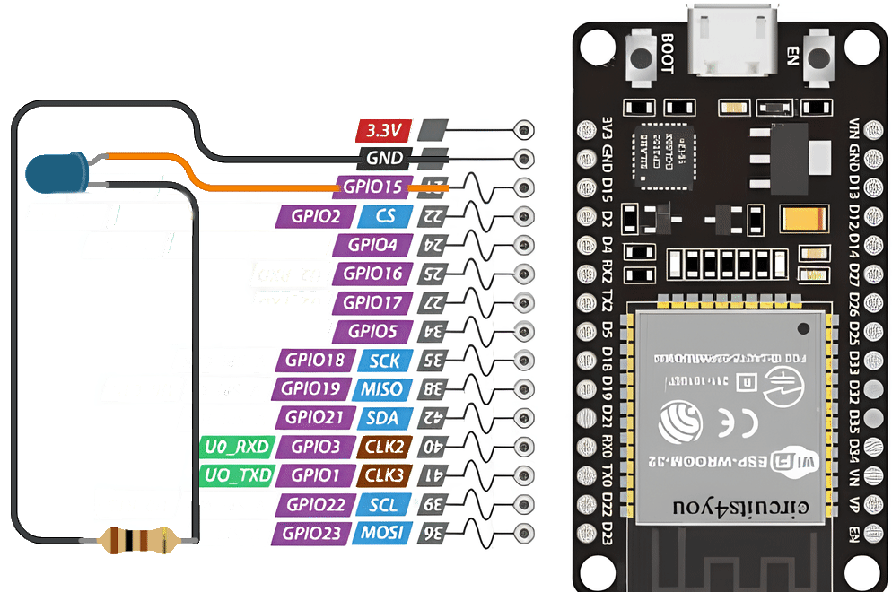
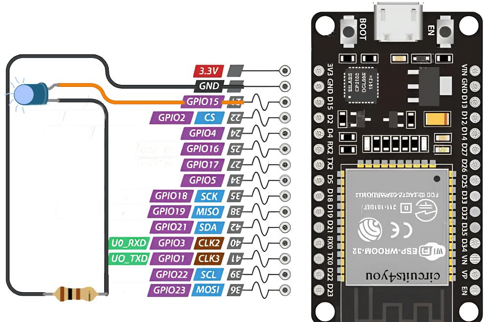

🧰 Що потрібно?
- ESP32
- Світлодіод
- Резистор 220 Ом
- Макетна плата та дроти
📌 Схема підключення
Підключіть анод світлодіода до GPIO 15, а катод — через резистор до GND.
👨💻 Код
from machine import Pin
from time import sleep
led = Pin(15, Pin.OUT)
led.on() # Увімкнути світлодіод
sleep(5) # Затримка 5 секунд
led.off() # Вимкнути світлодіод

Цей код увімкне світлодіод, зачекає 5 секунд, а потім вимкне його.
🔄 Код блимання світлодіода
from machine import Pin
from time import sleep
led = Pin(15, Pin.OUT)
while True:
led.on() # Увімкнути світлодіод
sleep(1) # Затримка 1 секунда
led.off() # Вимкнути світлодіод
sleep(1) # Затримка 1 секунда

Цей код змусить світлодіод блимати з інтервалом 1 секунда.